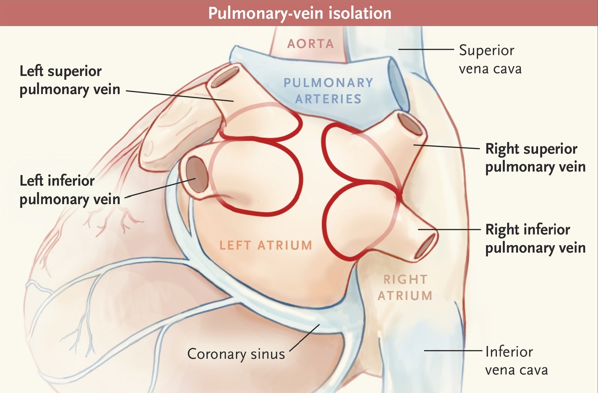

Nademanee et al. J Am Coll Cardiol 2004;43:2044–53.
Packer et al. STOP AF. J Am Coll Cardiol 2013;61:1713–23.
Scherr et al. Circ Arrhythm Electrophysiol. 2015 Feb;8(1):18-24, Verma et al. N Engl J Med 2015;372:1812-22, 2012 HRS guidelines for AF Ablation, and 2016 ESC guidelines for AF.

Marrouche et al. Circulation 2003.
2014 ACC guidelines & 2016 ESC guidelines for AF.
Di Biase et al. Circulation. 2014;129:2638-2644 and Calkin et al. N Engl J Med 2017;376:1627-36.
Gupta et al. Circ Arrhythm Electrophysiol. 2013;6:1082-1088, and 2016 ESC guidelines for AF.


Von Bary et al. Circ Arrhythm Electrophysiol. 2011;4:630-636 and Prieto et al. Heart Rhythm. 2010 Sep;7(9):1233-9.

Squara et al. Circ Arrhythm Electrophysiol. 2014;7:561-562.
Knopp et al. Heart Rhythm 2014;11:574–578.

Leong-Sit P et al. Circ Arrhythm Electrophysiol. 2011;4(1):11–14 and 2012 HRS guidelines for AF ablation.
...in case u forgot, u were on "HOW" page...